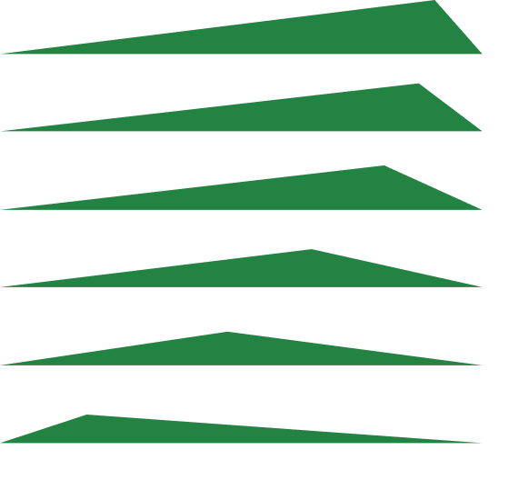

SUPERLINEAR ACADEMY社区直播我发到第 73 个视频，
才出了第一个涨粉过千的
停止所有探索，死磕自媒体
立正×Jiabin Lu
2026年11月24日 · 超线性学院
我发到第 73 个视频，才出了第一个涨粉过千的。
- 我做 YouTube，发到第 73 个视频，才第一次有一个视频带来上千个订阅。
- 右下角这些小方块，一格是我发过的一个视频，按发布的先后排。深色的是头 72 个，绿的那一格是第 73 个。
我的 YouTube 后台：头 73 个视频，每个带来多少订阅
前 72 个里最好的一个，带来 581 个订阅
1,000 个订阅
第 1 个，2020年2月
第 40 个，2020年底
第 73 个，2021年7月
最好的一个 581
这 72 个，我发了一年半。一半的视频，每个带来的订阅不到 35 个。
第 73 个 2,327
你现在发到第几个了？
数据：我的 YouTube 后台，2026年11月22日取，订阅是到这一天的累计。视频都指3分钟以上的公开视频。下同。
我发了一年半、72 个视频，没有一个带来上千订阅。第 73 个才是。
- 我做 YouTube 六年多，现在 12 万订阅。这是我发的头 72 个视频，一根柱子是一个视频带来的订阅，按发布的先后排。
- 虚线是一千。这 72 个里没有一个够得着，最好的一个是 581。这 72 个我发了一年半，有一半每个带来的订阅不到 35 个。
- 第 73 个是 2021 年 7 月底发的，讲 Influence Without Authority，带来两千三百多个订阅。这是第一个过千的。
- 你呢，现在发到第几个了？
问完停一下，请大家把数字打在聊天区，念几个。收尾那一屏会回到这个问题。
标出最好的一个：581
出现第 73 个
出现「你现在发到第几个了？」
发了一阵没起色，就是没天赋、没网感吗？
你认识我，多半是因为这20个视频
订阅的 58%
来自这20个
带来订阅最多的20个 其余 每个带来的订阅不超过20个，一共318个，占一半
你刷到的是别人中了的那几个，没中的那几百个你看不见。
视频都指3分钟以上的公开视频
你看到的是我中了的 20 个。我发的是 629 个。
- 发了一阵没起色，很多人会给自己下结论：没天赋，没网感。
- 订阅我的人，多半是看了这 20 个视频里的某一个点的订阅。每一个都带来了一千个以上。
- 我实际发的是 629 个。一格一个视频，从左到右、从上到下，按发布的先后排。第一个绿的，就是刚才那第 73 个。
- 订阅的 58% 来自这 20 个。浅色的那一半，每个带来的订阅不超过 20 个。
- 中的是 20 个，发的是 629 个，三十个里中一个。你刷到的是别人中了的那几个，没中的那几百个你看不见。所以它看起来像玄学。
出现全部 629 个方块
标出 58% 和浅色的那一半
出现「没中的那几百个你看不见」
自媒体不是玄学，
是手艺
看起来像玄学，是因为手艺的大部分你看不见。
今天，我把六年多的后台摊开讲。
自媒体不是玄学，是手艺。只是手艺的大部分，你看不见。
- 自媒体不是玄学，是手艺。它看起来像玄学，是因为手艺的大部分你看不见。
- 我做了六年多，将近一千个视频，12 万订阅。按这个更新量，这个数其实不高，这话我自己在视频里说过。拿它出来，是因为只有自己的后台我看得全。
- 我先讲半小时多，然后请 Jiabin 上麦，当场改一条内容。
出现「因为手艺的大部分你看不见」
这场直播的起因：论坛里的一段评论
「在做啊，没做起来」
Jiabin Lu 的帖子《工程师做商业闭环，从-1000到1》：内容网站、Etsy、B2B点子试了一圈，每条路都卡在同一个地方，不认识会付钱的人。
立正
YZ｜立正
如果我跟你们俩说 先去做自媒体 先去做自媒体 先去做自媒体 你们会去做吗
JL
Jiabin Lu
在做啊，没做起来的原因是 intensity 不够，发的不够多，三天打鱼两天晒网
我觉得大家太不把自媒体当回事了，密度太低，也没意识到这件事有多重要。
「在做，没做起来」，说的不只是 Jiabin。
- 这场直播是从一篇帖子来的。Jiabin 写了一篇帖子，讲工程师想做自己的生意。试了好几条路，每条都卡在同一个地方：不认识会付钱的人。
- 我在评论区问了他们一句，把同一句话说了三遍。
- 他回得很快：在做啊。然后自己把原因也说了。他没说自己没天赋，说的是 intensity 不够，三天打鱼两天晒网。
- 我觉得他说得很准。而且不只是他：大家太不把自媒体当回事了，密度太低，也没意识到这件事有多重要。
出现 Jiabin 的回复
标出「intensity 不够」「三天打鱼两天晒网」
出现「大家太不把自媒体当回事了」
今天讲什么
七个问题：先讲为什么，再讲怎么做
为什么
1想赚钱，为什么先做自媒体
2不露脸，行不行
3花这么多时间，值不值
4放着不做，说明什么
怎么做
5没有网感，练得出来吗
6后台里，你还看不见什么
7怎么才算死磕
＋请 Jiabin 上麦，当场改一条
今天回答七个问题：先讲为什么非做不可，再讲怎么做。
- 上半场讲为什么，四个问题：想赚钱，为什么要先做自媒体；不露脸行不行；花这么多时间值不值；放着它不做，说明什么。
- 下半场讲怎么做，三个问题：没有网感，练不练得出来；后台里你还看不见什么；怎么才算死磕。
- 讲完以后请 Jiabin 上麦，拿一条发出去的内容，当场改给大家看。
出现「怎么做」那三个问题
为什么1/ 4
想赚钱，为什么
要先做自媒体？
第一个问题：想赚钱，为什么要先做自媒体？
- Jiabin 的帖子本身就是答案，我们看他试过的路。
Jiabin 帖子里试过的几条路
每条路，最后都卡在同一个地方
内容网站
Etsy
B2B点子
→ 不认识会付钱的人
换一条路，还是会卡在这里。
开餐馆，选址决定成败的 80%。你能长时间有效地触达多少潜在的用户，基本上就决定了这门生意的上限。《2026年了，大多数人仍然不理解自媒体的真正价值》，2026年9月
每条路最后都要过「有人知道你、信你」这一关。这一关就是你这门生意的选址。
- 你看 Jiabin 试的这几条路，卡住的是同一个地方：不认识会付钱的人。换一条路，还是会卡在这里。
- 开餐馆最重要的是选址，选址决定成败的八成。你能长期触达多少会付钱的人，就是你这门生意的选址。
出现选址那句话
今年9月那期视频里的账
赚钱，要么赚生产的钱，要么赚分发的钱
生产
越来越卷。用 AI 做出来的东西，别人一个周末也能做出来。
分发
让会付钱的人长期看得到你、信你。普通人不投钱也能白手起家的，是这一头。
做自媒体很有可能是普通人在未来赚钱性价比最高的方式，甚至可能是接近唯一的方式，除非你投很多钱去开一个实体生意。
生产越来越卷，分发是普通人还抓得到的。所以我说自媒体接近唯一的方式。
- 我是学经济学的。一个东西从做出来到卖出去，钱要么被做的人赚走，要么被分发的人赚走。
- 做这一头越来越卷。有了 AI，你做出来的东西，别人一个周末也能做出来。
- 分发这一头，就是让会付钱的人长期看得到你、信你。这是普通人不投钱也能白手起家的地方。
- 所以我今年想通以后，就开始劝身边的朋友赶紧做自媒体。
出现「分发」
出现「性价比最高、接近唯一的方式」
为什么2/ 4
不露脸，行不行？
做自媒体，不露脸行不行？
- 只写文章、做匿名的号，行不行？露脸是很多人最不愿意的一条，所以单独讲。
为什么一定要露脸
打造一个品牌，极难，也极贵
你不刷屏、不重复，昨天晚上刷了五百个，第二天想一想，你记不起来的。记得起来的，往往都是刷屏级的。江南春，分众传媒创始人，播客《和盘托出》，2026年10月
同一期里他举的例子：泰兰尼斯、妙可蓝多这样的牌子，一年投两三亿广告，消费者才会想起这个品类就想起它。
一个 logo 可能要看一百次才记得住。一张人脸，看一次就记住了。
露脸是个人品牌的事。打造一个品牌极难、极贵，人脸却一次就能记住。
- 我的回答是不行，一定要露脸。
- 露脸其实是个人品牌的事。你想打造一个品牌，是极难、极贵的。
- 江南春做了二十多年广告。他说你一晚上刷五百条，第二天一条都想不起来，想得起来的都是刷屏级的。让消费者想起一个品类就想起你，一年要投两三亿广告。
- 我们没有这个钱。可是人脸反而很容易记住。
出现「一年两三亿广告费」
出现「一张人脸，看一次就记住了」
为什么一定要露脸
人脸不一样：记得住，信得快，肯掏钱
记得住
给人看照片认高中同学，毕业十五年后还有九成认得出。让他们凭空写出同学的名字，四十八年里忘掉六成。
Bahrick, Bahrick & Wittlinger, 1975
信得快
看一张陌生的脸 0.1 秒，对「这个人可不可信」的判断，就和不限时间慢慢看差不多。
Willis & Todorov, 2006
肯掏钱
Airbnb 上，照片看起来更可信的房东，要价更高，也更容易被订。
Ert, Fleischer & Magen, 2016
这三项研究说的都不是自媒体，是人怎么对待一张脸。
人对脸记得住、下判断快，信任建立得也快。这是心理学上研究过的。
- 第一个是记忆。给人看毕业照认同学，十五年后还能认出九成。可是让他们凭空想同学的名字，就越来越想不起来。
- 第二个是信任。看一张陌生的脸十分之一秒，人就对「这个人可不可信」有了判断，再多看也差不多。这不等于判断得准，但人对脸就是这么快。
- 第三个是钱。Airbnb 上，照片看起来更可信的房东，价格更高，也更容易被订。
- 所以脸这个东西，记得住，信任来得快。文字要做到这两样，慢得多。
出现「信得快」
出现「肯掏钱」
为什么一定要露脸
只读过文章、没见过脸的作者，你真的认识吗？
1说出三个你常读的作者。他们长什么样？
2把名字盖住，换一个人来写，你看得出来吗？
3他明天出一本书、一门课，你会买吗？
樊登讲过几百本书。那些书的作者，你记得几个？你记得的是樊登。
这就是为什么要露脸。脸是每个人不花钱就有的品牌，要用好它。
只看文章不知道脸的人，你记不住、认不出，他出东西你也多半不会买。所以要露脸。
- 大家可以想一想。你常读的那些文章，只看过文章、不知道脸，你真记得住这个人吗？真认识他吗？
- 有的人可能已经发了很多文章了，你对他们真的有印象吗？
- 同一段话换一个人说，你有感觉吗？他们出一个东西，你会买吗？很有可能不会。
- 再想想反过来的：樊登讲了几百本书，那些书的作者你记得几个？我推荐过很多次《为什么伟大不能被计划》《树之生命木之心》，作者叫什么？你记得的是给你讲的那张脸。
- 这就是为什么要露脸。你有这个东西，就要用好它。
讲到「你对他们真的有印象吗」时，现场点几个名字。
出现樊登的例子
出现「这就是为什么要露脸」
为什么3/ 4
花这么多时间，
值不值？
发了 72 个都没中，还要接着发。花这么多时间，值不值？
想让会付钱的人知道你，有几条路
成本最低：不用投钱，没有金钱上的风险
路要付出什么
买流量、投广告要花钱，风险高
开一家实体店要投很多钱
打造一个品牌一年两三亿广告
露脸做自媒体一部手机，加上你的时间
要让会付钱的人知道你，别的路都要投钱。露脸做自媒体只要一部手机和你的时间。
- 先算要付出什么。你可以花钱买流量、投广告，那要投入，风险也高。
- 你可以开一家实体店，那要投很多钱。
- 你可以打造一个品牌，刚才说了，一年两三亿。
- 露脸做自媒体，不用投钱，没有金钱上的风险。我有想法了，拿起手机到外面录一两分钟就是一期。
出现「开一家实体店」
出现「打造一个品牌」
出现「露脸做自媒体」
拿我自己的后台算
杠杆最大：讲一次，被看很多次
28分钟一期视频的时长
《华人在硅谷怎么做(不)到VP？》，2021年8月
→
六年多，我录的视频加起来四百多个小时，一共被看了 120 万小时。一个人不吃不睡，要看 137 年。
上班，是一小时换一小时的工资。
数据：我的 YouTube 后台，2026年11月22日取
讲一次，可以被看很多次。上班是一小时换一小时的工资。这就是杠杆。
- 再算能换回什么。这是我播放最高的一期，28 分钟，是我发的第 79 个，开头说的第 73 个之后一个月发的。到今天它被看了两万五千多个小时，是五万多倍。
- 六年多我录的视频加起来四百多个小时，一共被看了 120 万小时。一个人不吃不睡要看 137 年。
- 上班不是这样。公司买的是你的时间，一小时换一小时的工资，做完就没了。
- 成本最低，杠杆最大。这两样加在一起的事，我想不出第二件。
出现全部视频被看了 120 万小时
出现「上班，是一小时换一小时的工资」
为什么4/ 4
放着不做，
说明什么？
成本最低、杠杆最大的事放着不做，说明什么？
我不理解的是
嘴上说着想赚钱，
却放着成本最低、杠杆最大的
这件事不去干。
到处探索，自媒体却迟迟不做好，其实并没有真的想成功。就像想减肥的人，
不好好锻炼，不好好吃饭，
一边吃炸鸡，一边到处找减肥方法。
我想过为什么。我的猜测是，这件事让打工人和做题家特别不舒服。
嘴上说想赚钱，却放着成本最低、杠杆最大的事不干。这在我看来是态度问题。
- 在我看来，我不理解的是：你嘴上一边说着想赚钱，一边放着成本最低、杠杆最大的这件事不去干。
- 一个人到处探索，自媒体却迟迟不做好，我觉得他并没有真的想成功。就像减肥的人不好好锻炼、不好好吃饭，一边吃炸鸡，一边到处找减肥方法。
- 我以前一直想不通：自媒体好处这么大，又不用投钱，为什么做的人这么少？
- 我的猜测是，很多人心里有冲突，而且这个冲突是藏着的。尤其是我们这种人，打工人，做题家。
出现减肥和炸鸡
出现「我的猜测是，不舒服」
打工人和做题家的不舒服
学校和公司，一直替我们备着四样东西
这四样，自媒体一样都不给。
我们一路赢过来，靠的是有人出题、有标准答案、有人阅卷、按月发钱。自媒体把这四样都拿走了。
- 上学的时候有人出题，上班有人派活。做自媒体，讲什么、讲给谁，得自己定。
- 考试有标准答案。这里同一句话换个语气，结果就不一样。
- 以前打分的是老师和老板，是懂行的人。这里打分的是划手机的陌生人，三秒钟决定，没人对公平负责。
- 上班干满一个月就有一个月的钱。这里是很久是零，然后跳一下，后面我给你看我自己的数据。
- 所以不舒服很正常。我们最擅长的那套努力，在这里用不上。
有人出题 → 全得自己定
有标准答案 → 换个语气就不一样
有人阅卷 → 打分的是陌生人
按月发钱 → 很久是零，然后跳一下
出现「这四样，自媒体一样都不给」
为什么做的人这么少
可做可不做的事，阻力是藏起来的
去跑三千米，「我好懒」是一个显性的冲突。做自媒体可做可不做，阻力就藏起来了。
「我比较内向」
「我重视隐私」
「我们这代人习惯匿名」
「等我攒够了再写」
初中我不打篮球。我跟同学说，因为小时候被篮球砸过。可我从来没被砸过，那是我给自己编的故事。
人很容易信一个说法。信了，就不用再想自己到底在怕什么。
不做自媒体，没有人会来问你。所以人会给自己一个说法，然后就不再想了。
- 跑三千米，你知道自己在跟懒打架。自媒体可做可不做，你感觉不到自己在躲。
- 这些说法我都听过。
- 我初中不打篮球，跟同学说小时候被球砸过。其实从来没有。我说不清为什么不想打，也许是觉得太晚了、打不好。
- 我跟周洁说，比克服惯性更难的是发现它。它已经成了默认，你都不觉得自己做过选择。
出现几个常见的说法
出现我不打篮球的事
出现「信了，就不用再想自己到底在怕什么」
去年那期《科技大厂打工人，做自媒体的挑战》里说的
不舒服，不等于不适合
怎么做都火不了
是方法和态度的问题，
还轮不到谈适不适合。
别人骂我，我会生气，会睡不着觉。我要做的，是想方设法让别人骂我的时候我能睡着觉。然后我要承认，我现在睡不着觉，It's OK。
做得好却不想做，才叫不适合。做不起来就说不适合，多半是方法和态度。
- 我有个朋友做了几期，做得挺好，还挺火，然后就不想做了。这是真的不适合。
- 很多人说的不适合，是怎么做都火不了。这是没找到方法，态度也不够。
- 不舒服是真的。被骂我也会生气，也会睡不着。先承认现在睡不着，没关系。
出现「怎么做都火不了」
出现被骂会睡不着那段
怎么做1/ 3
没有网感，
练得出来吗？
下半场讲怎么做。先回答最常听到的一句：我没有网感。
- 很多人觉得火不火看命，看天赋，看网感。网感到底是什么，练不练得出来？
跟发小周洁聊自媒体那次，2026年9月
他说，网感看不见摸不着
他花了两分钟，讲自己卡在哪
2:00
我让他用二十秒再说一遍
0:20
同样是二十秒，换一种说法，别人想不想听又不一样。
这就是网感。它练得出来：写十篇文章，每次都认真琢磨开头怎么开。
网感看得见，也练得出来。两分钟变二十秒，就是。
- 九月我跟发小周洁聊了一个小时自媒体。他说网感看不见摸不着。
- 我说刚才这件事就看得见。你讲了两分钟，我让你二十秒再说一遍。
- 我自己也说了一个二十秒的版本，是说给观众听的：这个人是谁，卡在哪。
- 他想到赵本山讲小品：稿子一样，包袱抖快了抖慢了，效果都不一样。这是手艺。
出现二十秒那一条
出现「换一种说法又不一样」
出现「这就是网感，练得出来」
《真本事》第二章
除了考试，现实世界里几乎都是手艺
手艺
没有标准答案，
也证明不了。
但结果有好坏，能验证。
你的手艺好，结果就好；你的手艺差，结果就差。
手艺没有标准答案，但结果有好坏。所以可以拿结果当镜子。
- 网感练得出来，因为自媒体是一门手艺。我在《真本事》里把事情分成三种。
- 科学有标准答案，能证明谁对谁错。我们从小考的就是这个。
- 艺术是主观表达，没有统一的好坏。
- 手艺在中间：没有标准答案，你也证明不了为什么。但它看结果，结果是好是坏，能看出来。
- 写代码、做分析、做菜都是手艺。自媒体也是。它既然看结果，就能拿结果当镜子来练。
出现「艺术」
出现「手艺」
出现书里那句话
手艺没有标准答案
我们会先伸手要：第一步、模板、指标
后来他又想要一个大家都能照着走的起步模板，一个衡量成功的 metric。
立正
立正
给所有人普遍使用的，就是没有意义的东西。我给你的，就是你的。
Framework 能帮人执行，也会给人一种虚假的控制感。所有人都能照着走到的地方，一定高度竞争。
想要步骤、模板、指标，是想把出题人和标准答案请回来。可是人人都能照着走到的地方，一定很卷。
- 周洁一上来问我的就是这个：第一步、第二步、第三步做什么。后来又想要模板，想要一个指标。
- 我说我给不了。给所有人都能用的，就没有意义。
- 这个我们到最后也没达成一致，他还是觉得 framework 能帮他理解世界。
- 你要是也想先要一套步骤再开始，知道这是什么就行：是在找以前那个出题的人。
出现我的回答
出现「虚假的控制感」
模仿结构，不模仿内容
一条内容拆开是三个环节，每个环节后台都有一个数
标题和封面为什么让你点进来？点击率
前三秒为什么让你没有划走？三秒留存
后面的展开为什么让你不知不觉看完？完播率
先有意识地刷：只看自己赛道里一千赞以上的，练到能预判一条内容会不会高赞。
一条内容好不好，拆开看是三处。每一处后台都有一个数告诉你。
- 标题和封面，决定别人点不点。前三秒，决定划不划走。后面的展开，决定看不看完。
- 这三处对着三个数：点击率、三秒留存、完播率。
- 所以练的办法也清楚：搜一批你这个赛道的人，只看一千赞以上的，不学五十个赞的。拆它这三处为什么有效。
- 这三个数都在后台，在外面看不到。
出现「前三秒」
出现「后面的展开」
出现「只看一千赞以上的」
怎么做2/ 3
后台里，你还
看不见什么？
我六年多的 YouTube 后台：83 个月，986 个视频，12 万订阅。
看三件事：涨粉是怎么来的，每一期差在哪，停下来会怎样。
开头看了两样你看不见的东西。后台里还有三样。
- 开头给你看了两样：第一个之前的那 72 个，和没中的那 609 个。
- 后台里你看不见的还有三样：涨粉是怎么来的，每一期差在哪，停下来会怎样。
- 别人的后台我看不全，我只能拿我自己的给你看。
出现要看的三件事
你看不见的：开头有多慢
19 个月攒了 6,463 个订阅，第 20 个月涨了 12,396
累计订阅
第20个视频发出去时
不到 1,000 订阅
2020年底，40个视频
1,776 订阅
2021年8月底，80个视频
6,463 订阅
9月，一个月
+12,396
我没有见到任何一个人坚持了一年是做不好的。我见到所有的不行的人，都是发了二十条以内，然后就不做了。
头 19 个月几乎是平的。第 20 个月涨的，是之前所有加起来的两倍。
- 先看涨粉是怎么来的。这是我头两年的累计订阅。头三个月我发了三个品酒课的视频，一共涨了一个订阅。五月开始发餐馆、数据和职场的内容。
- 发到第 20 个视频的时候，还不到一千订阅。一整年 40 个视频，1,776 个。
- 到 2021 年 8 月底，80 个视频，六千多订阅，开头说的第 73 个就在这里。然后 9 月一个月涨了一万二，是之前所有加起来的两倍。那期是《华人在硅谷怎么做(不)到VP？》。
- 所以我跟周洁说，我没见过谁坚持了一年还做不好的，我见到的不行的人，都是发了二十条以内就不做了。发到第二十条的时候，我自己也什么都没有。
标出第 20 个视频、2020 年底、2021 年 8 月底
出现 9 月那一跳
出现「发了二十条以内就不做了」那句话
你看不见的：很久不动的那些月
涨粉不是每天涨一点，是很久不动，然后跳一下
每月订阅净增
2021年9月
2024年1月、2月
83个月里，这3个月
占了全部订阅的 28%
每月发的视频
2022年我平均每月发 5 个视频，2023年下半年是每月 14 个。这半年订阅 +5,263，上半年是 +4,607。
接下来两个月：+22,595。会是哪几期，事先我不知道；为什么是它们，事后也证明不了。
2020年1月—2026年11月，一根柱子是一个月
结果是跳出来的。哪一期会跳，我控制不了；我能控制的是出手多少次、每次是不是比上次好。
- 这是 83 个月里每个月涨的订阅。大部分月份是矮的。绿的三个月，占了全部订阅的 28%。
- 下面一排是我每个月发了多少视频。2023 年 7 月我离开大厂回美国，发的量从前一年的每月 5 个左右变成每月 14 个。
- 那半年订阅涨了五千多，跟上半年差不多。多发了两倍，没有多涨。
- 然后一月、二月，两个月涨了两万二，是跟硅谷徐老师和 Leon 聊的那几期。会是哪几期我事先不知道，为什么是它们，事后我也证明不了。手艺就是这样，它不给你证明。
标出最高的 3 个月
出现每月发的视频，标出 2023 年下半年
出现「接下来两个月 +22,595」
你看不见的：作者手里那面镜子
同一个人，同一个频道，点击率能差两倍半
0%2%4%6%8%10%
点击率：封面被看到以后，被点开的比例。一根柱子是点击率落在这一档的视频数。
最低的一成
最高的一成
最低的一成在 2.4% 以下，最高的一成在 6.1% 以上。
这个数只在后台。观众看到的，只有「这期火了」「那期没火」。
手艺的镜子就是后台这几个数。作者看得见，观众看不见，所以观众觉得是玄学。
- 这是我 612 个视频的点击率。同一个人，同一个频道，同一批观众。
- 最低的那一成不到 2.4%，最高的那一成超过 6.1%，差两倍半。点击率说的是选题、标题和封面这一关。
- 每发一期，后台都会告诉我这一期在哪一档。这就是镜子。
- 可是这个数你在外面看不到。你只看到这期火了、那期没火，那当然像玄学。
标出最低的一成和最高的一成
出现「这个数只在后台」
同一个话题，我讲过两次
同一个人讲同一件事，播放差了12倍
2025.07.11 · 27分39秒
科技大厂打工人，做自媒体的挑战：成功率很高，但不可能简单
第一句话Hey Hello，你现在在 TikTok 是吗
点击率3.2%
平均看了25%
播放4,200
2026.09.24 · 17分44秒
2026年了，大多数人仍然不理解自媒体的真正价值
第一句话选址这件事，决定了你成败的80%
点击率5.4%
平均看了34%
播放52,100
两期各自的后台数据，发布以来
同一个人讲同一件事，结果差 12 倍。差在哪，每个环节都有数。
- 打工人该不该做自媒体，这件事我讲过两次。去年七月一次，今年九月一次。
- 去年那期是跟朋友聊天的录屏，第一句话是「Hey Hello，你现在在 TikTok 是吗」。今年这期，第一句话是「选址决定了你成败的 80%」。
- 点击率 3.2% 对 5.4%。平均看完的比例 25% 对 34%。
- 播放四千二对五万二。两期隔了一年多，变的东西不止一样，我不说是哪一条造成的。但你看，每个环节都有一个数摆在那。
出现两期的第一句话
出现点击率和平均看了多少
出现播放：4,200 对 52,100
一期视频发出去的时候
你看到的是一张封面，后台里是三张
《为什么有人几个月就能打穿，有人几年还在原地打转？》，今年11月发的。
三张封面同时放出去，后台按观看时长比。
这次三张差不多，没分出高下。
大多数试验都是这样。
YouTube 后台截图，2026年11月22日
每一期都可以是一次试验。观众只看到最后留下的那一张。
- 这是我这个月初发的一期，讲 intensity。封面做了三张，同时放出去，后台会按观看时长比哪张好。
- 这次三张差不多，没分出来。说实话大多数试验都是这样，没有惊喜。
- 但做的人每一期都在照镜子，看的人不知道有这回事。
出现「这次三张差不多」
你看不见的：它一直在往下掉
过去一年的播放，88%来自这一年新发的视频
过去365天，全部视频的播放：447万
这一年新发的视频 88%
以前所有的视频 12%
订阅 1,776 → 122,930
×69
每个视频播放的中位数 4,379 → 12,122
×2.8
我很长一段时间不提高自己，反反复复都是说同样的那些东西，大家就不看了，我就下去了。
订阅和中位数：2020年对2026年
老视频不会一直替你上班，粉丝多了每一期也要重新挣。所以三天打鱼两天晒网，约等于没做。
- 很多人以为内容发出去就一直有流量。我过去一年的播放，88% 来自这一年新发的视频。之前五年发的所有视频加起来，只占 12%。
- 再看这两条。我的订阅从第一年的一千七涨到十二万，69 倍。每期视频的播放中位数，只涨了不到 3 倍。
- 平台不会把视频推给你所有的粉丝。每一期都要重新挣。
- 所以这是逆水行舟。停下来，它就往下掉。
出现订阅 ×69、每期播放 ×2.8
出现「大家就不看了，我就下去了」
回到这个问题
看不见，所以容易想错
你看不见所以容易以为
没中的那609个高手每期都中，我一期不中就是不行
第一个之前的72个发二十条，就该有结果了
后台的那几个数火不火是玄学
它一直在往下掉偶尔发一发，也算在做
把看不见的补上，这件事就不像玄学了：它要的量、要的时间，都比你以为的多。
- 看不见没中的，就以为别人每期都中。
- 看不见开头那 72 个，就以为发二十条该有结果了。
- 看不见后台的数，就以为火不火看命。
- 看不见它在往下掉，就以为偶尔发一发也算在做。
出现第二行
出现第三行
出现第四行
手艺看结果
对结果有追求，先把「结果」说具体
周洁做自媒体，是为了找到能一起投资的人。假设他发了十期，每期只有十几个赞，但有一个潜在的合作伙伴说：「我看过你讲的东西，咱们聊聊吧。」这就是成功。
你一开始如果没有想清楚成功是什么的话，你就会觉得这个是个失败。因为虽然说我有了，但是我笔记只有十个赞。
要大流量：粉丝多、播放高，接广告。 要高变现：少数精准、认可你的人。
两样通常冲突。先选一样，再看数据。
想做好，要对结果有追求。结果不一定是粉丝数，先说清楚你要的是哪一种。
- 手艺看结果。你不想要结果，后台那面镜子就没用，发出去就只是交作业。
- 但结果是什么要先说清楚。对周洁来说，十个赞带来一个合作伙伴，就是成功。
- 要大流量还是要高变现，两样通常冲突。我自己粉丝不算多，但在同样粉丝量的博主里，我的变现能力很强，而且不接商单。
出现「没想清楚成功是什么，就会觉得这是个失败」
出现「要大流量」和「要高变现」
Jiabin 说「在做啊」
「在做」和「死磕」差在哪
在做死磕
露脸不露，或者偶尔露露脸。一张人脸，看一次就记住了
频率想起来发一条至少一周一个，最好一天一个
每一期发出去就算完成想方设法比上一期做得更好
认真像跟同事随口说像给 +3 汇报
看别人刷到什么看什么只看自己赛道一千赞以上的，拆它为什么有效
死磕的标准：露脸，至少一周一个，每一期都想办法比上一期好，拿出给 +3 汇报的认真。
- 露脸。一个 logo 要看一百次才记得住，一张人脸看一次就记住了。
- 频率至少一周一个，最好一天一个。每周逼自己发一次，不叫勤。
- 每一期发之前，你说得出它比上一期好在哪。这就是对结果有追求。
- 认真有好几档。你跟同事讲工作是一档，跟老板讲是一档，给 +3 汇报又是一档。你拿哪一档对待你的账号？
- 看别人也要挑着看。只看你这个赛道一千赞以上的，拆它的标题、前三秒、后面的展开。
出现「频率」
出现「每一期」
出现「认真」
出现「看别人」
Jiabin 说的 intensity
低密度的一万小时，只能练出熟练的低水平选手
强度 ＝ 密度 × 方向 × 低损耗
密度
单位时间里，有效的动作有多少
方向
这些动作在不在解决核心问题
低损耗
有没有砍掉无效的准备、犹豫和内耗
三项是乘法。任何一项是零，整体就是零。
《为什么有人几个月就能打穿，有人几年还在原地打转？》，2026年11月
三天打鱼两天晒网，是密度的问题。到处探索，是方向和损耗的问题。
- Jiabin 用的词是 intensity。我这个月初刚好发了一期讲它，我把它翻译成强度。
- 强度是密度乘方向乘低损耗。三天打鱼两天晒网，密度就低。一边做一边到处找方法、找工具，损耗就高。
- 三项是乘法，一项是零，整体就是零。
出现三项各是什么
跟周洁聊的那次
死磕不是靠自律硬撑
每天很难受地逼自己发，是在消耗你原本的事业。
前十期要找的，是一种你愿意一直做、又能不断改进的方式。
当我表达得足够爽了，我就可以多出来一百个话题可以表达。那我在这一百个话题里边选一些受众爱听的就行了。
死磕不是咬牙硬撑。前十期的结果，是找到一种你愿意一直做、还能越做越好的方式。
- 周洁听完说，那首先得有 discipline。我说又反了。你每天很难受地逼自己发，是在消耗你本来的事业。
- 做内容没有通用的工作流。我有想法了，拿起手机到外面录一两分钟，这不是最好的方式，但适合我。
- 表达欲和观众爱听的，也不用平衡。你表达得足够爽，话题会多到一百个，从里面挑观众爱听的就行了。
出现「多出来一百个话题」那句话
停止所有探索，
死磕自媒体，
一定要露脸。
这不是唯一的路。可是连杠杆最大的这条路都不去认真试，
就是对成功还不够渴望。
我发到第73个，才等来第一个。这个数，从发第一条那天开始数。
你发到第几个了？
这不是唯一的路。但连杠杆最大的这条路都不认真试，就是对成功还不够渴望。
- 我的建议就是评论区那一句：停止所有探索，死磕自媒体，一定要露脸。
- 我不是说这是唯一的路径。但是如果你连杠杆最大的这条路都不去认真尝试，那就是对成功不够渴望。
- 开头我问过你发到第几个了。我发到第 73 个才等来第一个。这个数是从发第一条那天开始数的，晚一个月开始，就晚一个月到。
出现「这不是唯一的路」
出现「你发到第几个了？」
讲完了，做一遍
请 Jiabin 上麦，当场改一条发出去的内容
要什么结果这一条发给谁，想让他做什么？
标题和封面刷到的人，为什么要点进来？点击率
第一句话点进来的人，为什么不划走？三秒留存
后面的展开为什么会看完？完播率
改完再发。发之前，说得出这一条比上一条好在哪。
前面都是讲。现在拿一条真的内容，当场改一遍。
- 前面都是我在讲。现在做一遍：拿一条已经发出去的内容，当场改。
- 顺序就是前面那三个环节。先问这一条想要什么结果，再看标题和封面、第一句话、后面的展开。
- 改完发出去，看后台那几个数有没有变。发之前，你说得出它比上一条好在哪。
- 你也可以拿自己最近发的一条，跟着一起改。
这里切到 Jiabin 的那条内容（等他发来）。他没带，就请上麦的人贴一条自己的，或者拿屏 31 左边我自己去年那期（点击率 3.2%）。
出现「标题和封面」
出现「第一句话」
出现「后面的展开」
出现「说得出比上一条好在哪」
接下来
你做自媒体卡在哪？上麦聊
评论区里已经问到的
不清楚做什么方向，怎么开始？
坚持不下来，要不要找人陪跑？
粉丝群、邮件订阅，什么时候做？
Stay Superlinear 会员优先上麦
改完这一条，大家上麦。
- 这三个是评论区里已经问到的，可以从这里开始。
- 陪跑那个问题，我在评论里回的是：陪跑是伪命题。
- 粉丝群、邮件订阅那个问题，我的回答是先做半年，到时候再想也不晚。
- Stay Superlinear 会员优先上麦。